Japan / Chiba / Yokoshibahikari
Yokoshibahikari, Chiba: things to do, food and stays
Yokoshibahikari · Chiba
Yokoshibahikari
Highlighted on the Chiba map.
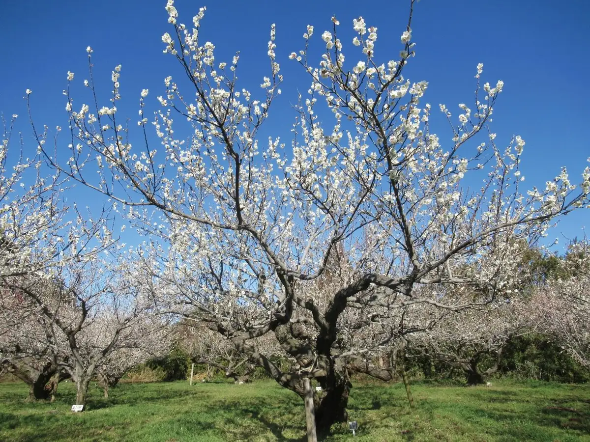
Stay
ハッピーペンション九十九里
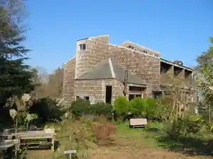
Happi Pension Kujukuri
貸別荘バーネットビレッジ
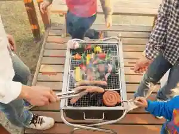
Kashibesso Banettobirejji
ユーティリティ ホテル クー
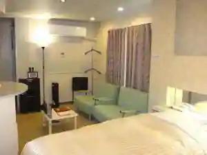
Yuteiritei Hotel Ku
Hotel in Kuriyama, Yokoshibahikari with Wi-Fi and parking.
ペンションかもめ
Pension Kamome
コテージ＆ペンション ＮＡＮＪＡ ＭＯＮＪＡ
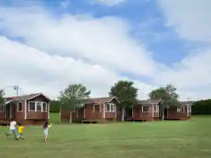
Cottage & Pension NANJA MONJA
Pension in Kido, Yokoshibahikari with open-air baths and a sauna.
和ひかり
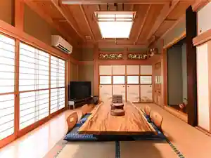
Wa Hikari
元気な宿 木戸浜
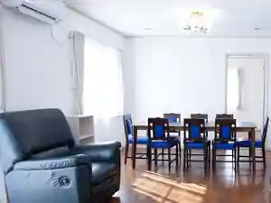
Genki Na Yado Kido Hama
九十九里ペンションＣＯＣＯ
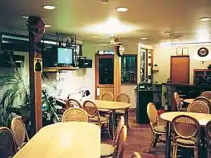
Kujukuri Pension COCO
Pension in Kido, Yokoshibahikari with business travelers.
砂海NALU（サウナル）
Suna Umi NALU(Saunaru)
Inn in Odarei, Yokoshibahikari with a sauna.
Dining
まぐろや
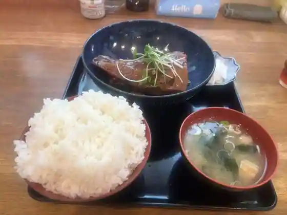
Maguroya
山本さかなや
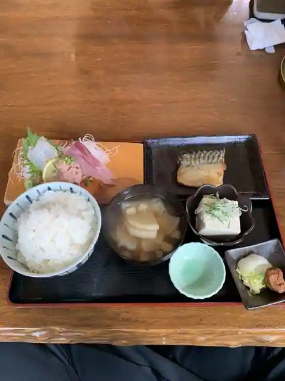
Yamamoto Sakanaya
おばこや
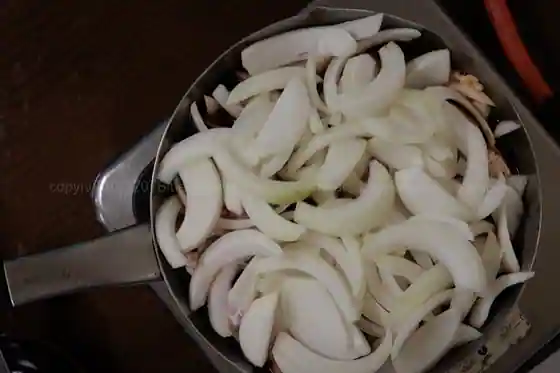
Obakoya
Good Day Ramen 千夏8
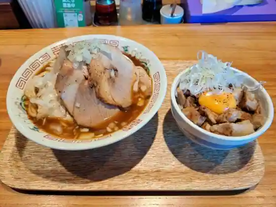
Good Day Ramen Chinatsu 8
秀丸食堂
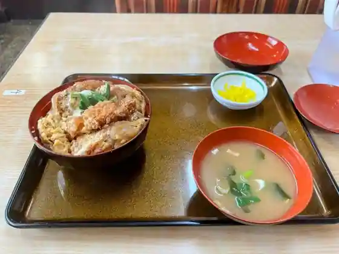
Hidemaru Shokudo
ほっこりごはん くるり
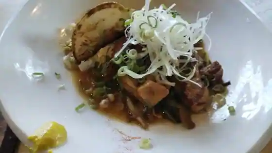
Hokkorigohan Kururi
とん亭 九十九
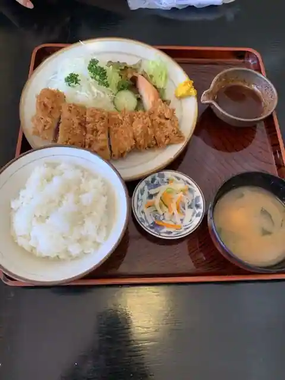
Ton Tei Tsukumo
幸楽
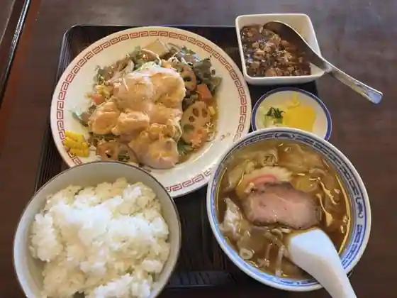
Koraku
梅よ志
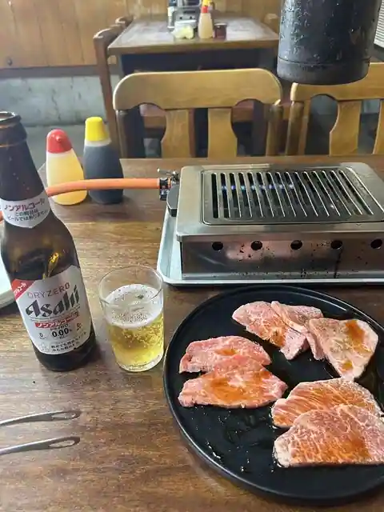
Ume Yo Kokorozashi
一條
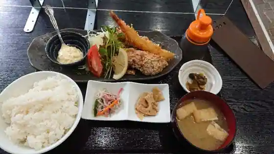
Ichijo
そば処 ひろせ
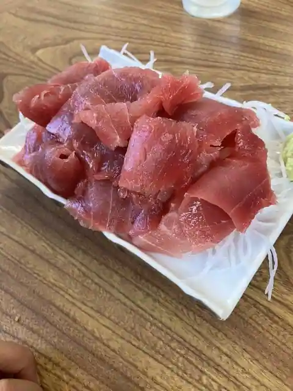
Soba Tokoro Hirose
四季の膳処 あづま庵
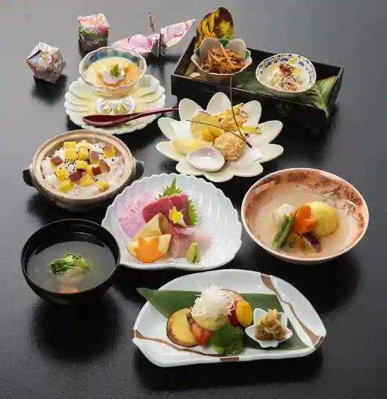
Shiki No Zen Tokoro Azuma Iori
ラーメンショップ 光町店
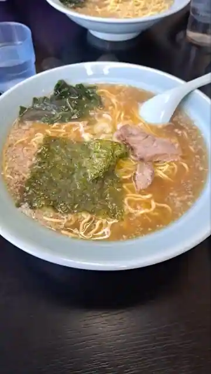
Ramen Shoppu Hikaricho
博多屋台らーめん 壱弐参
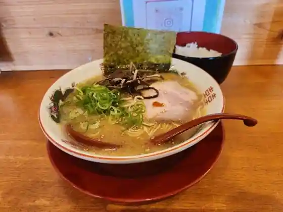
Hakata Yatai Ramen Ichi Ni San
カレドニアン・ゴルフクラブ レストラン
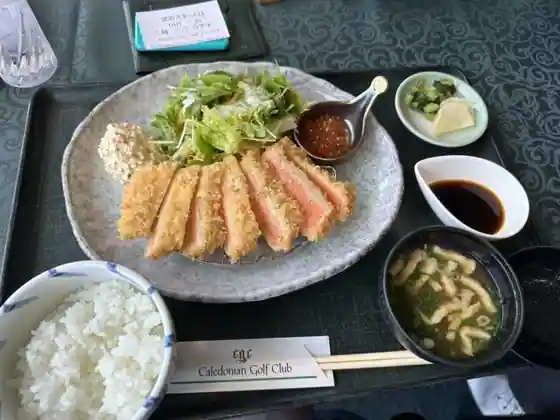
Karedonian Gorufukurabu Restaurant
孝美
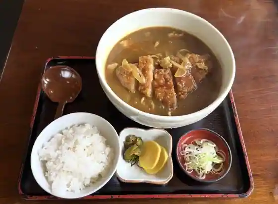
Takami
コミュニティCAFE&農家のキッチンLABO FARM TO...
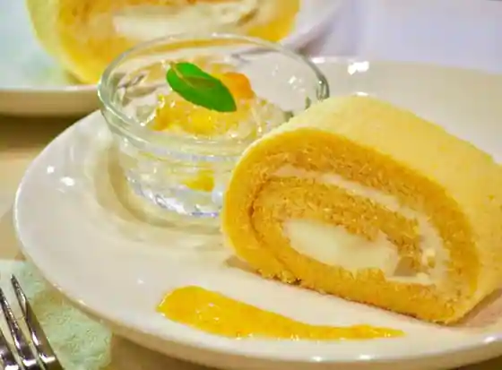
Komyunitei CAFE& Noka No Kitchen LABO FARM TO...
いそべ食堂
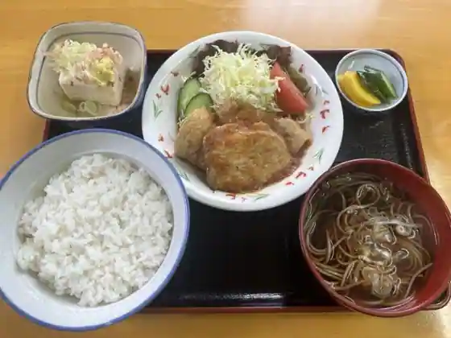
Isobe Shokudo
コテージ&ペンション NANじゃMONじゃ
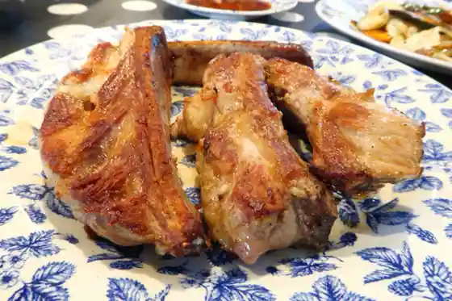
Cottage & Pension NAN Ja MON Ja
拉麺食堂 らいもん
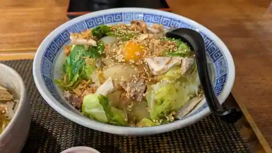
Ramen Shokudo Raimon
中国ダイニング 冨士屋
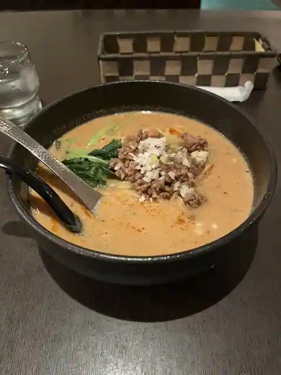
Chugoku Dining Fujiya
ライス&ベーカリー UTOPIA
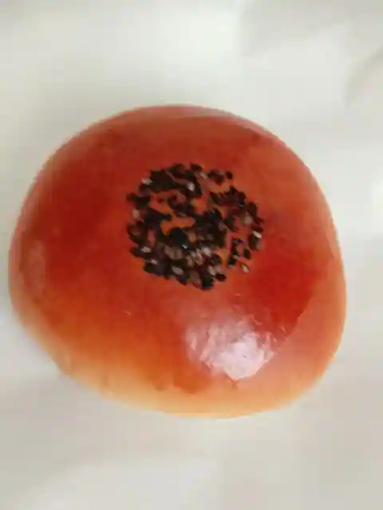
Raisu & Bakery UTOPIA
蔵や
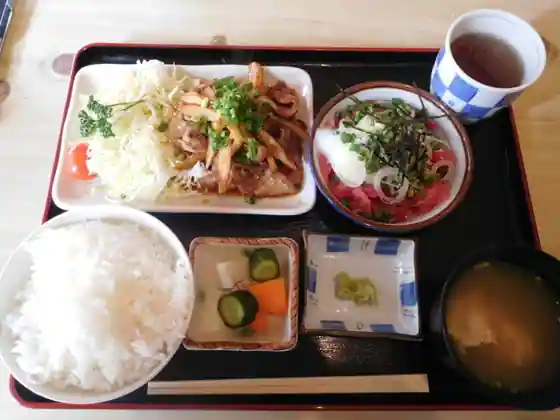
Kura Ya
居.食やZen
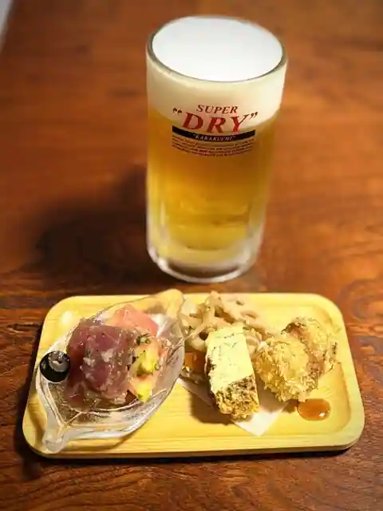
Kyo. Shoku Ya Zen
Sights
JR Yokoshiba Ekisha
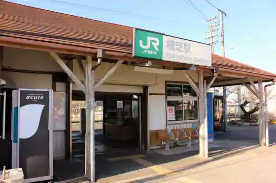
Narita Yama Gohonzon Joriku no Chi
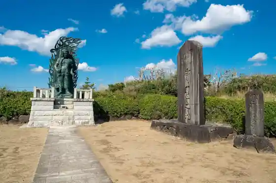
Sakata Castle Ruins (Moto)
Tonozuka Himezuka
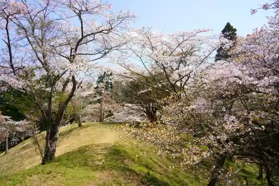
Shiroyama Mi no Ri Sono
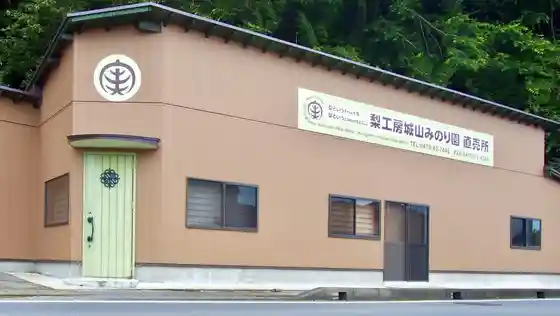
Marinpia Kuriyamagawa
Kosai Tera
Machi Hara Oicho
Yakata Shi Sha Shrine
Yokoshiba Ekimae Johoko Ryu Kan (Yoridokoro)
Sambu Ubayama Kaizuka